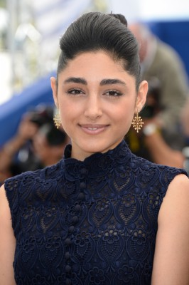
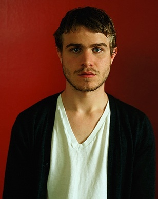

#4945 Eden

 IMDB-Wertung: 6.4 / 10
IMDB-Wertung: 6.4 / 10  Metascore: 0
Metascore: 0 
Paul Vallée (Félix de Givry) liebt Musik und hängt viel in Pariser Underground-Clubs ab. Zusammen mit einem Freund entschließt er sich, die Seiten zu wechseln. Statt nur zu den Beats zu tanzen, wollen die beiden selbst für welche sorgen. Sie gründen das DJ-Duo Cheers, fangen auf kleinen Hauspartys an, sind sich aber auch für schäbige Clubs nicht zu fein und bekommen so nach und nach einen beachtlichen Bekanntheitsgrad. Paul gibt alles und führt das klassische DJ-Leben, von Nacht zu Nacht, wobei er auch viele Frauen kennenlernt. Eine von ihnen ist die Amerikanerin Julia (Greta Gerwig), mit der er sich sogar eine Zukunft vorstellen kann. Doch mit wachsendem Ruhm verändert auch Paul sich. Er lernt berühmte Leute kennen, zieht nach Amerika und tourt so viel er kann. Nur hat dieses anstrengende Leben voller Partys und Drogen auch seinen Preis...
Jahr: 2014
Dauer: 131 Minuten
FSK: 12
Land: Frankreich Studio: Alamode FilmTonspuren:
Untertitel: Deutsch,
Auflösung: 1080p (1920x808) Größe: 6246 MB
Genre: Drama, Musik
Regisseur: Mia Hansen-Løve
Drehbuch: Tomi Ungerer
Soundtrack:
Darsteller:
- Félix de Givry als Paul Vallée
- Pauline Etienne als Louise
- Roman Kolinka als Cyril
 Vincent Lacoste als Thomas Bangalter
Vincent Lacoste als Thomas Bangalter- Arsinée Khanjian als La mère de Paul
 Greta Gerwig als Julia
Greta Gerwig als Julia- Laura Smet als Margot
-  Golshifteh Farahani als Yasmin
- Olivia Ross als Estelle, atelier écriture
 Claire Tran als Midori, copine Arnaud
Claire Tran als Midori, copine Arnaud-  Brady Corbet als Larry
- Lucille Bobet als Eye-contact d'Arnaud
- Cassandre Dagon als
- Shirville Jarvis als House / Break Dancer
- Daphne Rhea Pellissier als
- Jonathan Louis als Un homme en soirée , uncredited
- Noël Sorrente als Un homme en couple , uncredited
- Vincent Macaigne als Arnaud
- Hugo Conzelmann als Stan
- Zita Hanrot als Anaïs
- Hugo Bienvenu als Quentin
- Arnaud Azoulay als Guy-Manuel de Homem-Christo
- Laurent Cazanave als Nico, Respect
 Paul Spera als Guillaume, Respect
Paul Spera als Guillaume, Respect- Juliette Lamet als La soeur de Paul
- Léa Rougeron als Théodora
- Sigrid Bouaziz als Anne-Claire, copine Guillaume
- Zite Vincendeau-Verbraeken als Lise, copine Arnaud
- Julian Starke als Ilan, copain Louise
- Sébastien Chassagne als Hervé
- Pierre-François Garel als Animateur FG
- Michael Bruno als Collègue Terry Hunter
- Jon Johnson als Collègue Terry Hunter
- Brune Hazelet als Fille Louise : Emma, 1
- Emma Domino als Fille Louise : Emma, 2
- Charlie Bonnemaison als Fille Louise : Charlotte, 1
- Paloma Nardy Marchier als Fille Louise : Charlotte, 2
- Grégory Mallet als Manu, Hossegor
- Philippe Petit als Banquier
- Andréa Brusque als Banquière
- François Buot als Physio Cheers
- David Blot als Patron Coupole
- Fabrice Thoué als Assistant patron Coupole
- Aude Pépin als Copine Margot
- Slim Trabelsi als Assistant Cheers
- Asha Thomas als Agent India
- Juana Gomezcaceres als Nièce India
- Francis Van Litsenborgh als Physio Silencio
- Arnaud Frisch als Directeur Silencio
- Audrey Lévy als Ex de Paul Silencio
Datei: X:\2014(A-F)\Eden (2014, FSK12, 1920x808).mkv seit 05.12.2016
Festplatte: HD 2013(I-Z)-2014(A-Z)
 Es gibt insgesamt 119 Filme in der Gruppe '2014(A-F)'
Es gibt insgesamt 119 Filme in der Gruppe '2014(A-F)'